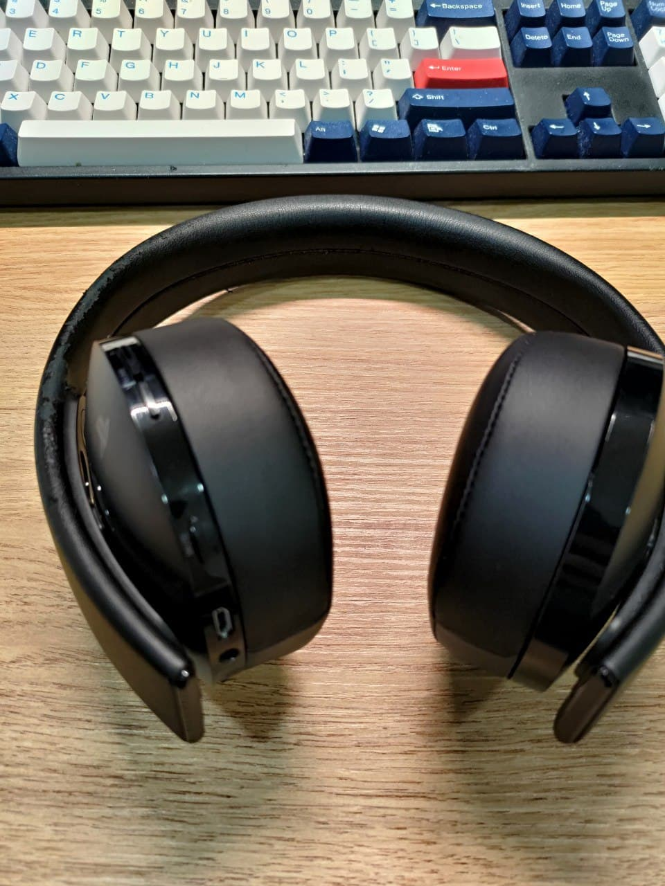

PS4耳機 Cuhya0080更換耳罩
索引
前言⌗
自從買了 PS4 PRO 到現在，這副耳機也幾乎跟著我奮鬥了這麼長的時間，雖然有著久戴悶熱的這個小缺點，但不管事音質的清晰程度，或是麥克風對話的聲音，在這個價格都是相當有競爭力的。
隨著使用時間變久，耳罩也自然呈現脫皮的狀態，而且愈發嚴重，導致房間的地板常常會有黑色的碎皮，想到耳機本體還好好的，確認因為這樣再花錢買一副新的耳機實在是不划算。
這篇作為更換耳罩的展示。
教學⌗
Cuhya0080 是用類似卡榫的方式做固定，所以只要沿著耳罩邊緣撬開，就可以把耳罩拿下來。
難的是要如何完全密合的裝回去，兩邊短的卡榫特別的難壓，難怪有人說需要大力金剛指才可以裝回去。
建議先想辦法把短邊壓下去，再把長邊壓下去，不然使勁吃奶的力量大概也無法撼動短邊的空隙。
😅滿滿歲月的痕跡


😍新的耳罩

可以趁這次機會把耳機做個清潔

😱想辦法壓緊，加油吧!!! 
拆解下來的舊耳罩，不再見了，掰!!!
Read other posts